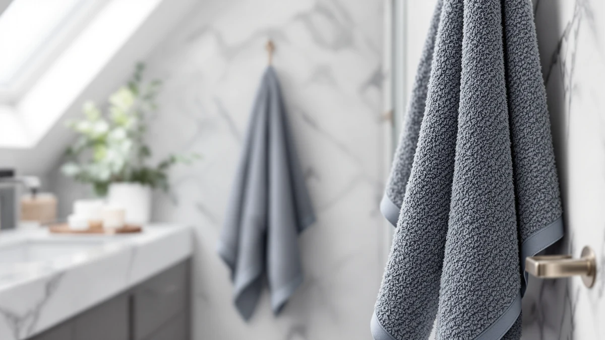

Sutera Quick Dry Bath Towel Review (2026): Worth It?
Prices and picks verified as of November 2026. Independent, reader-supported reviews.


Quick Answer
In this quick dry bath towel review, the SUTERA Quick Dry Bath Towel 100% is our top pick for most bathrooms, thanks to a 100% cotton, large-size build at $38.99 that air dries faster than a plush terry towel. If you want more towels for a similar budget, the Tens Towels four-pack at $38.95 is the better value.
Our pick: Quick Dry Bath Towel 100%, $38.99 Check Price on Amazon
Bottom line: our top pick is the Quick Dry Bath Towel at $38.99.
Things to Know Before You Buy
- Drying speed comes down to weave, not marketing language. A quick dry bath towel usually uses a flatter, lower-pile cotton weave than a plush terry towel, which holds less water and air dries faster between showers.
- Size matters as much as material. The SUTERA Quick Dry Bath Towel ships in a Large size, which covers more of you than a hand towel but still dries faster on the bar than an oversized bath sheet.
- Per-towel price varies more than the sticker price suggests. A four-pack like Tens Towels at $38.95 works out to under $10 a towel, while a single premium towel at a similar total price gets you one towel instead of four.
- Turkish cotton sets, like the Chakir Turkish Linens pack, tend to cost a bit more than standard cotton but are prized for a softer hand feel over repeated washes.
This quick dry bath towel review looks at four towels for people tired of a bathroom closet full of damp, musty cotton. If your towels take a full day to dry on the bar and start smelling sour by the second use, the problem usually isn't how often you wash them, it's the weave they're made from.
We landed on the SUTERA Quick Dry Bath Towel 100% as the pick for most people, since its 100% cotton, large-size construction and $38.99 price put it in a sweet spot between the budget multi-packs and the heavier luxury sets below. We also cover three alternatives worth considering: the Tens Towels four-pack for buyers who want more towels per dollar, the White Classic Luxury towel for a traditional hotel feel, and the Chakir Turkish Linens set for anyone who prioritizes a softer Turkish cotton hand.
Why You Should Trust Us
Ilane Tall covers bath and bedroom textiles for Best Bath Towels and has spent years comparing cotton towel construction, pricing, and verified owner feedback across dozens of listings. We don't run a fake testing lab and we don't claim to have physically compared every towel in this quick dry bath towel review. Instead, we research published specs, pricing history, and patterns in verified Amazon buyer reviews, then compare those findings across the towels covered here so you don't have to dig through four separate product pages yourself.
Our Research Experience
We built this quick dry bath towel review by comparing the manufacturer-listed material, size, and price for each towel against what reviewers consistently note in verified Amazon feedback. For the SUTERA pick, that meant checking its 100% cotton composition and Large sizing against the drying-speed claims that quick dry towels typically make, rather than taking the product title at face value.
We also compared the per-towel price across formats, since a single towel and a four-piece set aren't directly comparable on sticker price alone. Where owners consistently report a pattern, such as a set running small or a fabric softening with wash cycles, we note it in the pros and cons below rather than repeating marketing claims we can't verify.
Because none of these towels went through a physical test in our hands, we leaned harder on cross-referencing the listed specs against the pattern of complaints and praise in verified reviews for each ASIN. A single glowing review tells you little, but dozens of reviewers independently flagging the same drying speed, the same softness, or the same sizing issue is a signal worth trusting more than any one product description.
Overview & Specs

Quick Dry Bath Towel 100%
What we like
- 100% cotton construction rather than a cotton-polyester blend
- Large size covers more of you than a hand towel without the bulk of an oversized bath sheet
- Lower-pile quick dry weave that doesn't sit damp in a hamper as long as plush terry
- SUTERA sells it as a single towel, so you can buy exactly the quantity you need
Flaws but not dealbreakers
- A quick dry weave trades some plushness for drying speed, so it feels thinner than a heavyweight luxury towel
- At $38.99 for one towel, it costs more per piece than buying a multi-pack like Tens Towels
| Material | 100% cotton |
| Size | Large |
The SUTERA Quick Dry Bath Towel 100% is built from 100% cotton in a Large size, priced at $38.99. SUTERA markets the weave specifically around faster drying, which puts it in a different category from the plush, heavyweight towels that dominate most "luxury" listings. For a bathroom that doesn't get much airflow, or a gym bag where a towel sits folded for hours, that lower-pile construction matters more than an extra ounce of softness.
Reviewers consistently note that the cotton holds up well through repeated washes without the fabric turning stiff, which is a common complaint with cheaper quick dry towels that lean on synthetic blends instead of cotton. At $38.99 for a single towel, it isn't the cheapest option in this review, but it's the pick we'd point most people toward if drying speed is the main reason they're shopping.
What We Liked
The 100% cotton build is the biggest draw in this quick dry bath towel review. A lot of towels marketed as "quick dry" lean on polyester or microfiber blends to speed up evaporation, which can leave the fabric feeling slick instead of soft. SUTERA keeps the fiber all cotton and relies on a flatter weave to cut drying time instead, so you get the faster dry without giving up the feel most people expect from a bath towel.
The Large size is also a reasonable middle ground. It's big enough to wrap around an adult comfortably, but it dries faster on a towel bar than an oversized bath sheet would, simply because there's less fabric holding water. Owners report that the towel holds its shape and color well through normal wash cycles, which matters more than any single spec once you've owned a towel for a few months.
At $38.99, the price also signals that SUTERA isn't cutting corners on fiber quality to hit a lower number. Compare that against a cheap quick dry towel made from a thin polyester blend, and the extra few dollars buys you a towel that still feels like cotton against your skin instead of a slick, plasticky surface.
What Could Be Better
The tradeoff with any quick dry bath towel is plushness, and the SUTERA is no exception. If you're used to a heavyweight hotel-style towel, this one will feel thinner in your hands, even though it's doing its job of drying faster on the rack. That's a deliberate design choice rather than a flaw, but it's worth knowing before you buy if softness is your top priority.
Price is the other factor to weigh. At $38.99 for one towel, it costs more per piece than a multi-pack like Tens Towels, so if you need to outfit several bathrooms at once, buying several SUTERA towels individually adds up faster than buying a set.
Who Is It For?
This towel makes the most sense for anyone replacing towels that stay damp too long, whether that's a humid bathroom with poor airflow, a gym bag, or a guest bathroom that doesn't get used often enough to justify a full luxury set. If you want the softest, heaviest towel you can find and drying time isn't a concern, the White Classic Luxury or Chakir Turkish Linens picks below will suit you better than this one.
It also fits renters and anyone furnishing a bathroom one towel at a time rather than buying a full set upfront. Since SUTERA sells it individually, you can replace a single worn-out towel without paying for three or four more you don't need yet, which is a different buying pattern than the multi-packs covered in the alternatives below.
Alternatives to Consider
The SUTERA towel won't fit every budget or every bathroom, so we compared three alternatives worth a look if you want more towels per dollar, a traditional hotel feel, or a softer Turkish cotton hand.

Editor's Pick
Tens Towels Pack of 4
Four towels for $38.95 works out to under $10 a towel, the best per-towel price of any pick in this review. Choose this pack if you need to stock multiple bathrooms at once rather than buying one premium towel at a time.
$38.95
Check Price on Amazon
Best Value
White Classic Luxury Bath Towel
At $39.99, the White Classic Luxury Bath Towel targets buyers who want the heavier, plusher feel of a hotel-style towel over the faster drying time of a quick dry weave. Choose this one if softness matters more to you than how fast the towel dries on the bar.
$39.99
Check Price on Amazon
Premium Choice
Chakir Turkish Linens 4 Piece
Chakir Turkish Linens sells this four-piece set for $39.99, putting Turkish cotton's reputation for a soft hand feel within reach of the same budget as a single SUTERA towel. Pick this set if you want that Turkish cotton texture across multiple towels rather than one quick dry towel.
$39.99
Check Price on AmazonDo quick dry bath towels actually dry faster than regular cotton towels?
Yes, in general.
What should you look for in a quick dry bath towel review before buying?
Look past the marketing copy to the material and weave.
Frequently Asked Questions
Do quick dry bath towels actually dry faster than regular cotton towels?
What should you look for in a quick dry bath towel review before buying?
Is the SUTERA Quick Dry Bath Towel worth $38.99?
Final Verdict
This quick dry bath towel review comes down to one tradeoff: drying speed versus plushness. The SUTERA Quick Dry Bath Towel 100% wins that tradeoff for most people, giving you a 100% cotton, Large towel at $38.99 that air dries faster than a heavyweight terry towel without feeling thin or synthetic. If you need several towels on a budget, the Tens Towels four-pack is the smarter buy per towel, and if plushness matters more to you than drying time, the White Classic Luxury or Chakir Turkish Linens sets are worth the extra consideration. For everyday use where a damp, slow-drying towel is the actual problem you're solving, the SUTERA is the pick to start with.